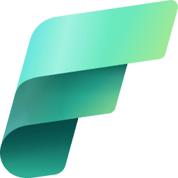
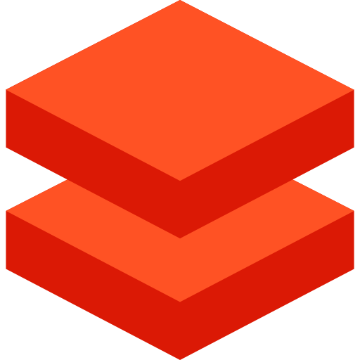
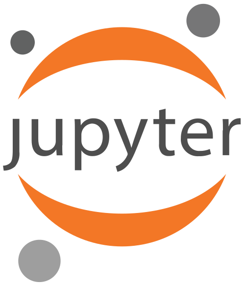
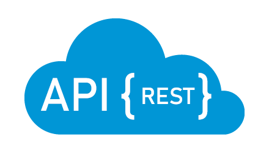
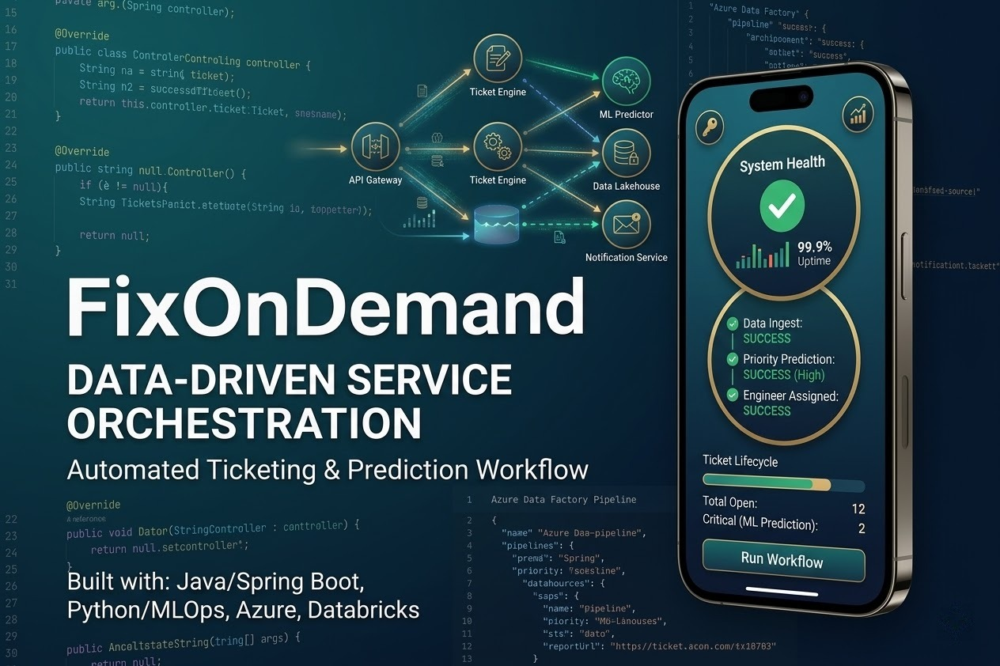
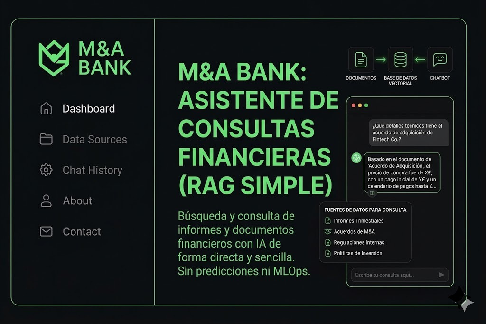

Sobre mí
Perfil orientado a producto, arquitectura robusta y colaboración real de equipo.
"Nadie es mejor que nadie; simplemente somos piezas distintas de un mismo engranaje." Creo firmemente que el éxito de un proyecto no depende de un "genio" solitario, sino de la capacidad de un equipo para combinar sus fortalezas. Mi enfoque no es ser el que más sabe, sino ser el que mejor suma.
Vengo del mundo del desarrollo multiplataforma (DAM), lo que me dio una base sólida en la construcción de software real. Mi curiosidad por entender el valor de la información me llevó a especializarme con un Máster en Big Data e IA. Aunque cuento con 6 certificaciones oficiales en el ecosistema de Azure, las veo como herramientas de aprendizaje continuo, no como metas finales.
Me considero una persona comunicativa que disfruta escuchando y aprendiendo de los demás. Mi objetivo es aportar mi granito de arena en el Backend y el mundo de los Datos, siempre con la humildad de saber que cada interacción con un compañero es una oportunidad para mejorar.
Visualizar CV🛠️ Ecosistema Tecnológico
📊 Ingeniería de Datos y Analítica

Microsoft Fabric
Spark + Databricks🤖 IA y Machine Learning

Scikit-Learn + Pandas⚙️ Backend y Arquitectura

APIs REST☁️ Cloud, DevOps y Calidad
📜 Certificaciones Oficiales
Datos y Analítica
IA y Ciencia de Datos
Infraestructura y Datos
Mis Proyectos
Soluciones reales enfocadas en arquitectura limpia, rendimiento y experiencia de usuario.
ChannelCast: Java Real-Time Chat App
Chat en tiempo real con Java y sockets, simulando un sistema moderno de mensajería.

FixOnDemand: App de Ticketing de Incidencias
Gestión de incidencias para empresas con registro, asignación y seguimiento de tickets.

M&A Bank: Aplicación Bancaria Multidivisa
Aplicación bancaria completa con login seguro, gestión de cuentas en varias monedas, envío de dinero, conversión de divisas en tiempo real y chatbot con IA.
Cuisine AML: Predicción Inteligente de Demanda
Solución de analítica predictiva para hostelería que anticipa la afluencia por servicio y la demanda de platos, optimizando compras, preparación y asignación de recursos en cocina y sala.